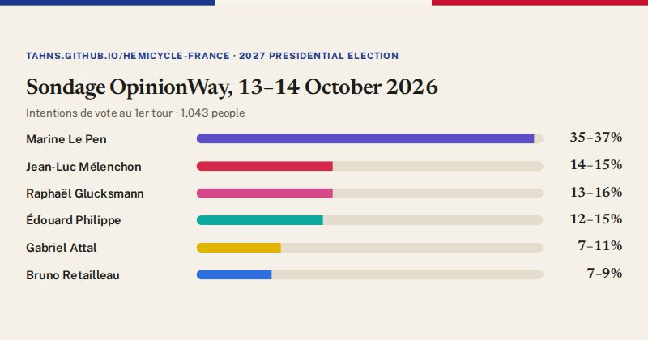

Présidentielle 2027 · sondage
Intentions de vote au 1er tour : OpinionWay, enquête du 13-14 octobre 2026

| Candidat | Intentions de vote |
|---|---|
| Marine Le Pen | 35 % |
| Jean-Luc Mélenchon | 15 % |
| Raphaël Glucksmann | 13 % |
| Édouard Philippe | 12 % |
| Bruno Retailleau | 6 % |
| Gabriel Attal | 5 % |
| Éric Zemmour | 5 % |
| David Lisnard | 4 % |
| Marine Tondelier | 2 % |
| Nathalie Arthaud | 1 % |
| Fabien Roussel | 1 % |
| Nicolas Dupont-Aignan | 1 % |
| Karim Bouamrane | 0,5 % |